JUNE 2004
Trip to Paris
Premiere for Liberty Bound
Day 1 - Sunday June 20, 2004
| 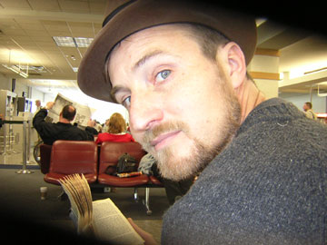 | 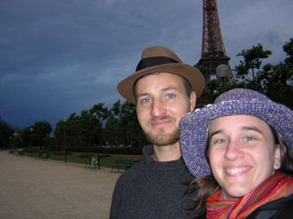 | 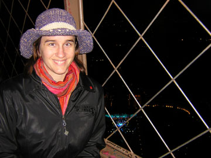 |
| Ethan at the airport | Me & Ethan at the Tour d'Eiffel | Me at the top of the Tour d'Eiffel |
| 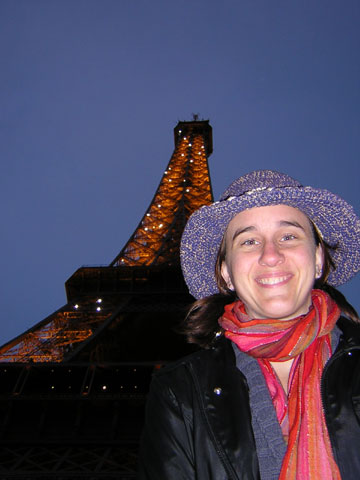 | 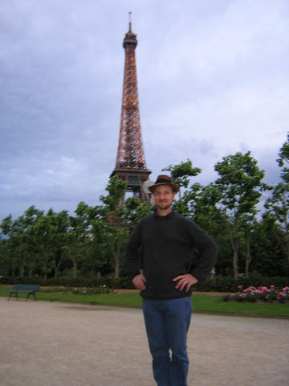 | 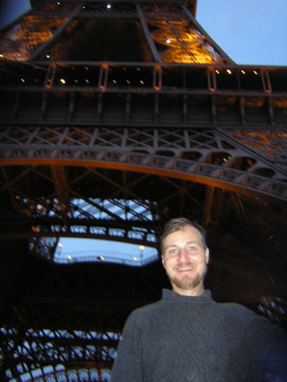 |
| Me & the Tour d'Eiffel | Ethan & the Tour d'Eiffel | Ditto |
Day 2 & 3 - Monday June 21, 2004 & Tuesday, June 22, 2004
| 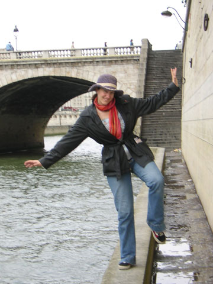 | 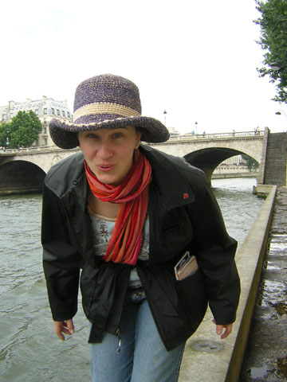 | 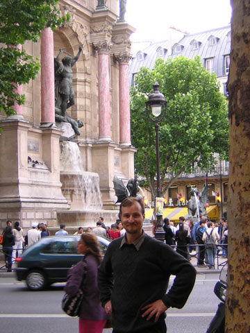 |
| Me walking by the Seine | Me by the Seine across from Notre Dame & St. Michel | Ethan at La Fontain St. Michel, across from the theatre |
| 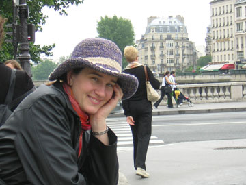 | 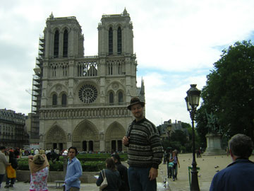 | 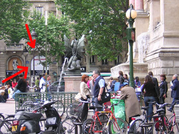 |
| Me by the Seine across near Notre Dame & St. Michel | Ethan by Notre Dame Cathedral | The theatre across from the fountain at Espace St. Michel |
| 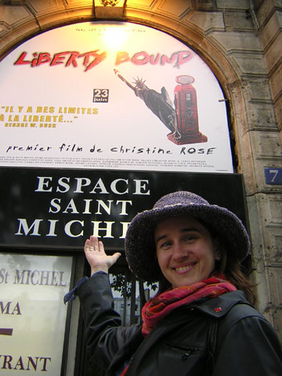 | 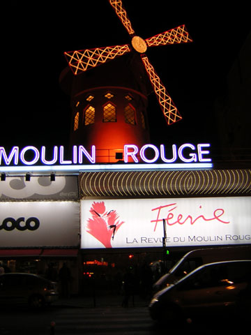 | 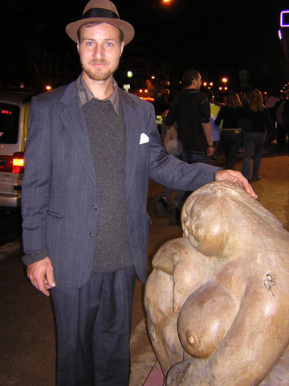 |
| Me with my movie poster for Liberty Bound | The Moulin Rouge in the Red Light District of Paris | Ethan with a goddess statue outside the Erotic Museum |
Day 4 - Wednesday, June 23, 2004 - The PREMIERE of Liberty Bound
| 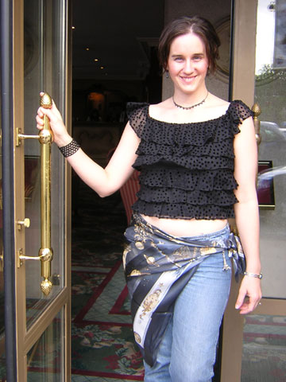 | 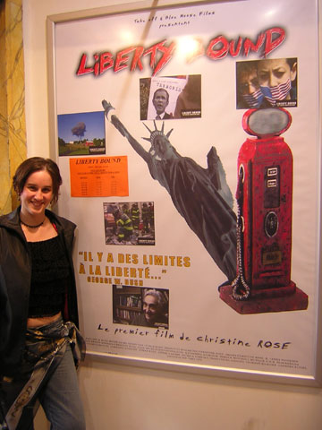 | 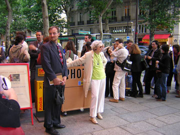 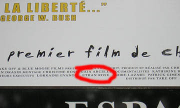 |
| Me at my hotel leaving for the premiere | Me at the theatre with the wonderful poster designed by Manuel Guyon | The line waiting to get in to see my movie! & Ethan's name "in lights" |
Day 5 - Thursday, June 24, 2004
| 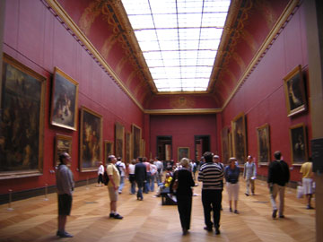 | 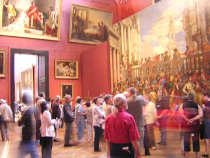 | 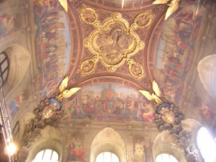 |
| The Great Hall of Musee de L'ouvre | Large format paintings | Ornate Ceilings |
 |
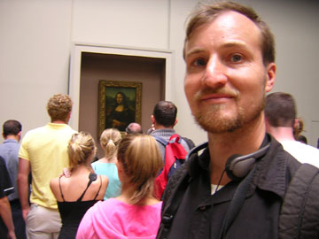 | 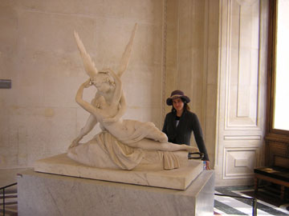 |
| Greek Wrestlers - I love this piece. | Ethan with the Mona Lisa | Me with Cupid & Psyche |
| 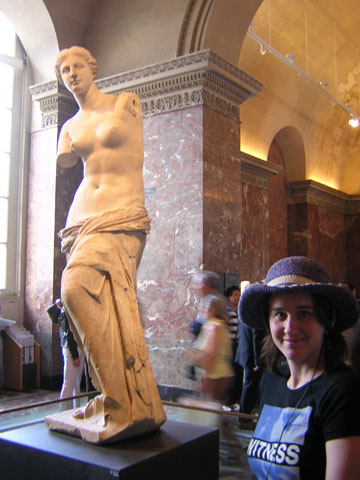 | 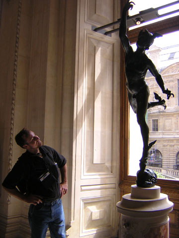 | 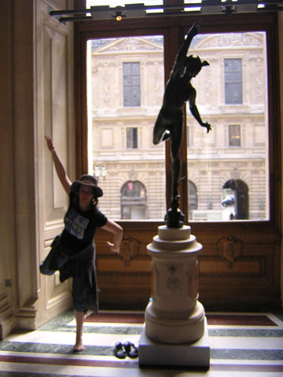 |
| The Beautiful Goddess of Love -- and some statue... :-) | Ethan & Mercury | Me trying to be Mercury! |
| 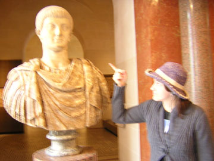 | 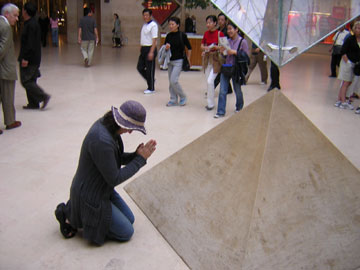 | 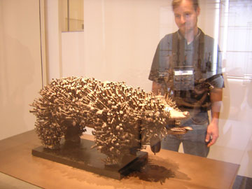 |
| Me scolding Constantine for what he did to Christianity | Me kneeling before the bones of my fallen Goddess Mary Magdalene (according to The DaVinci Code) | Ethan with an interesting African sculpture made with nails |
| 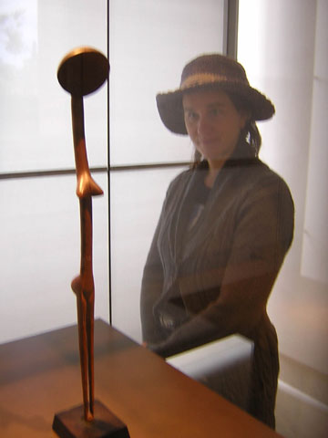 | 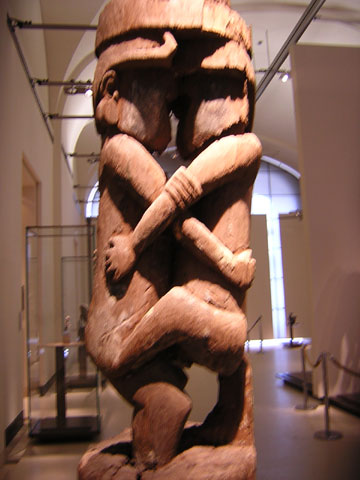 | 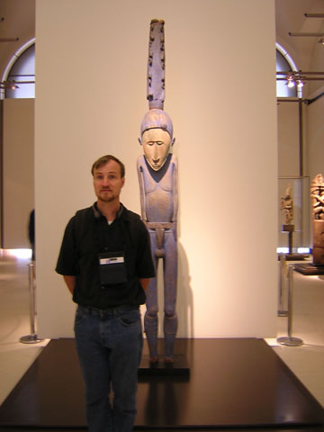 |
| Me with a fertility goddess carving | Beautiful fertility carving | Ethan with a fertility god |
Day 6 - Friday, June 25, 2004 (Worked all Day)
Day 7 - Saturday, June 26, 2004
| 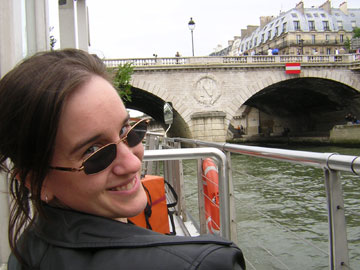 | 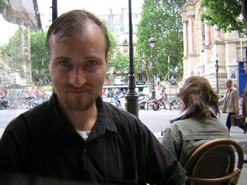 | 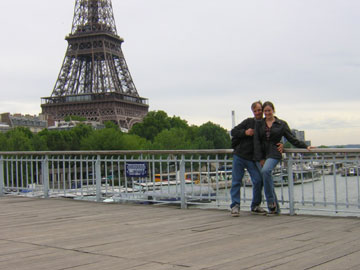 |
| Our boat ride on the Seine - Beautiful! | Ethan at lunch across from Espace St. Michel | Ethan & I on the lover's foot bridge near the Tour d'Eiffel |
Day 8 - Sunday, June 27, 2004 (Ethan went home and I slept!)
Day 9 - Monday, June 28, 2004 (Last Day)
| 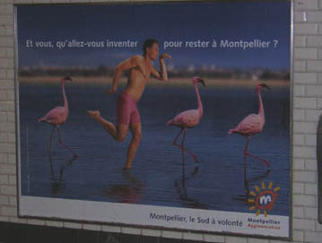 | 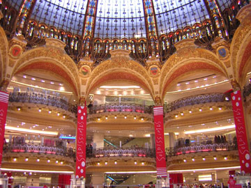 | 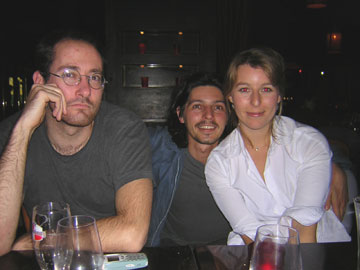 |
| My favorite ad in the Metro stations | The glorious ceiling at Galleria Lafayette | Manuel & Estelle with their friend on the left (whose name I don't remember!) |
| 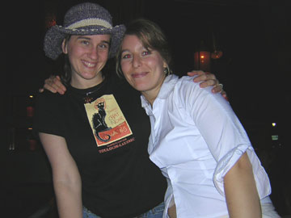 | 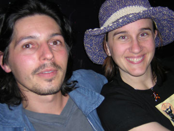 | 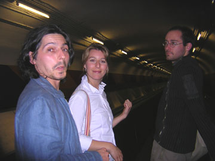 |
| Me & the beautiful Estelle | Me & the beautiful Manuel | Manuel, Estelle, and their friend |